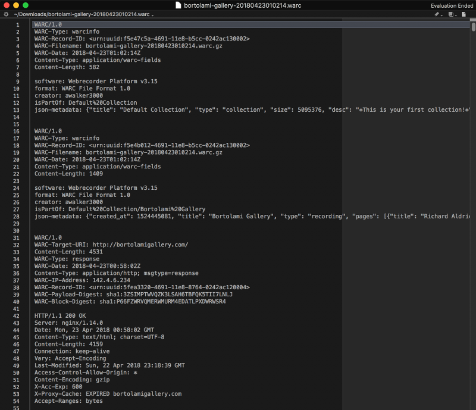

In the web archiving world, the most widely used crawler is Heritrix.
It was built by the Internet Archive, and is open-source and extensible.
However, it isn’t always able to capture audio and video files and other dynamic content.
To combat this, the Internet Archive is now developing brozzler, which uses a browser to load pages, and works in conjunction with youtube-dl to download and capture these files.
Open-source crawlers are also being developed by individuals, and many of these tools utilize a browser in the same manner as brozzler.
Archiving services like Webrecorder don’t utilize crawlers, and instead record your network traffic as you navigate through a website as a way of discovering URLs.
For each website, you'll start with a URL or seed that serves as the crawler's entry point. In addition to this starting point, you will also need to establish your scope, or the extent of what you’d like to capture.
Websites often contain vast amounts of links, which can turn into prohibitive amounts of data. This can be both cumbersome to acquire and access, as well as expensive to store. Other elements, such as event calendars, can cause your crawler
to crawl infinitely into the future. You can avoid these crawler traps and other difficulties by:
- Limiting your scope to certain pages of a site by specifically setting those URLs as seeds
- Giving your crawl a data or time limit
- Giving your crawl a small depth - the depth is the number of links away from the main seed that the crawler will capture.
If every piece of the website you want is one link away from the main seed, you can give your crawl a depth of one, and so on
After the crawler has finished gathering the data within your scope, it will deliver it to you in a standardized way, most likely as a Web ARChive (WARC) or ARC file.
An ARC format file consists of a one-line header describing what was captured in the crawl, followed by all of the harvested data in one block.
It is the original file format for archiving websites, used since 1996 by the Internet Archive to manage their website captures and other digital objects.
The WARC file format is an extension of ARC, and what you’re most likely to run into if you’re starting to archive today and don’t have any legacy data.
It provides more structure to the data gleaned from the site itself, and includes more secondary content, including assigned metadata and more information about the capture.

When you look at a WARC file, you can see the header, followed by the payload - all code, images, and documents from a website in the form of raw data, together in one long string.